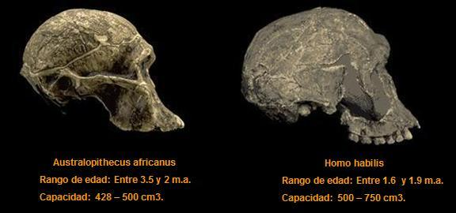

En 1931 el paleoantropólogo Louis Leakey descubrió herramientas de piedra en la Garganta de Olduvai al norte de Tanzania, esto lo llevó a proponer que en este sitio se podrían encontrar homínidos fósiles. La predicción de Leakey se cumplió 28 años después cuando Jonathan Leakey halló los restos de uno de los primeros seres que eventualmente llevaron a la humanidad. Para 1964 Louis Leakey, Phillip Tobias y John Napier definían la especie Homo habilis. Gracias a las cenizas volcánicas se estableció que la edad de estos fósiles es de 1.800.000 años lo cual los ubica al final de la época del Plioceno y a inicios del Pleistoceno.
Los Homo habilis habían modificado su capacidad craneal, pues estos ya presentaban una expansión del cerebro que se encontraba entre 500 y 750 cm3. (La capacidad de los australopitecinos estaba entre los 400-500 cm3). Del cráneo hacía abajo seguían siendo muy parecidos a los australopitecos. Como ya se mencionó, a esta especie se le atribuye la elaboración de las primeras herramientas de piedra. Estas industrias líticas primitivas se conocen técnicamente como Olduvayense o Modo 1. Cronológicamente los fósiles de H. habilis abarcan un rango entre 1,6 y 1,9 millones de años.

Al revisar las fuentes creacionistas es curioso que rechacen las características intermedias de esta especie. El texto “En busca de los orígenes: ¿Evolución o creación?” dice sobre Homo habilis:
“El Homo habilis es otro grupo de supuestos homínidos intermedios. No son muchos los restos craneales, y aún menos los postcraneales… La anatomía del Homo habilis no nos permite concluir que posea el rasgo de humano, sino que parece estar más próximo a los australopitecinos. Su cerebro (850 cm3) parece que era algo mayor que el de los australopitecinos (450-750 cm3), pero menor que el del Homo erectus (950-1.100 cm3).” [1]
Es cierto que los restos postcraneales son menos abundantes que los restos craneales, pero resulta curioso que los creacionistas mencionan que los H. habilis tienen una capacidad craneal superior que la de los australopitecos y menor que la del H. erectus y aún así califican esta especie basal como “otro grupo de supuestos homínidos intermedios”. ¿Si esto no es intermedio, entonces qué lo es?
El libro creacionista de los adventistas agrega:
“Desde su descripción inicial algunos paleoantropólogos se mostraron partidarios de incorporar a Homo habilis en el grupo de los australopitecinos”.
Los creacionistas creen que porque algunos expertos como B. Wood y M. Collard consideren que Homo habilis (y también Homo rudolfensis) debería clasificarse dentro del género Australopithecus los esquemas evolutivos se desbaratarían. De hacerse el cambio de género estas especies se denominarían Australopithecus habilis y Australopithecus rudolfensis, pero esto no las sacaría del árbol filogenético humano. [2]
Como se mencionó anteriormente, el esqueleto postcraneal de los Homo habilis (o Australopithecus habilis) es más parecido al de los australopitecos. Pero esto no hace daño a la explicación evolucionista. Los australopitecos fueron claramente bípedos y se poseen restos fósiles de fémures de H. habilis (como KNM-ER 1481 (a-d), KNM-ER 1500, KNM-ER 1503) que son evidencia de su bipedestración. Por otra parte, y más importante aún, Homo habilis y Homo rudolfensis existieron después que los primeros australopitecinos. Es claro que se les parecían en estatura y en otros rasgos del esqueleto postcranial, pero en estas dos especies se dio una expansión del tamaño del cerebro. Este cambio en el tamaño del cerebro en una secuencia temporal hace de los habilis justo lo que se esperaría encontrar si la evolución fuese cierta.
Algunos creacionistas también presentan como objeción el hecho que Homo habilis y Homo rudolfensis sean contemporáneos. Algunos de ellos, en su esfuerzo tergiversador preguntan ¿Cómo es posible que las especies antecesoras y descendientes se encuentren viviendo juntas? Esto en realidad no es ningún inconveniente. Una especie puede dar origen a otra si una de sus poblaciones se especializa en un nicho particular (especiación simpátrica) y después no puede procrear con los miembros de la población parental. En este caso no es obligatorio que la especie que le dio origen tenga que extinguirse.
El registro fósil indica que entre hace 2.5 a 1.8 millones de años coexistieron H. habilis y H. rudolfensis, pero entre hace 1.9 o 1.8 millones de años las dos especies antes mencionadas coexistieron también junto a H. ergaster y Paranthropus boisei, lo que revela que al menos cuatro especies de homínidos bípedos convivieron en un momento al oriente del lago Turkana (Kenya).
El Homo ergaster que vivió entre 1.8 y 1.4 millones de años presentó una mayor expansión cerebral que sus predecesores (entre 800 y 850 cm3). Estas evidencias armonizan con la teoría evolutiva y justifica por qué el paleontólogo Richard Leackey afirmó que
“El Homo sapiens no es sino una especie entre muchas, fruto de una intricada e imprevisible relación entre los procesos creativos de la evolución y la mano de la extinción…”
Notas
Volver a la sección Ciencias de los orígenes
Comentarios
Comments powered by Disqus